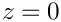
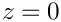
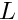
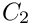
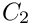

In this tutorial we demonstrate the solution of a 3D solid mechanics problem: the large-amplitude bending deformation of a non-symmetric cantilever beam made of incompressible Mooney-Rivlin material.
Here is an animation of the beam's deformation. In its undeformed configuration, the beam is straight and its cross-section is given by a quarter circle. The beam is loaded by an increasing gravitational body force, acting in the negative  -direction, while its left end (at ) is held fixed. Because of its non-symmetric cross-section, the beam's downward bending deformation is accompanied by a sideways deflection.
-direction, while its left end (at ) is held fixed. Because of its non-symmetric cross-section, the beam's downward bending deformation is accompanied by a sideways deflection.

Note how the automatic mesh adaptation refines the mesh in the region of strongest bending.
The mesh
We use multiple inheritance to upgrade the already-existing refineable "quarter tube mesh" to a solid mesh. Following a call to the constructor of the underlying meshes, we set the nodes' Lagrangian coordinates to their current Eulerian positions to make the initial configuration stress-free.
Global parameters and functions
As usual, we define a namespace, Global_Physical_Variables, to define the problem parameters: the length of the cantilever beam, , a (pointer to) a strain energy function, the constitutive parameters  and  for the Mooney-Rivlin strain energy function, and a (pointer to) a constitutive equation. Finally, we define the gravitational body force which acts in the negative -direction.
and  for the Mooney-Rivlin strain energy function, and a (pointer to) a constitutive equation. Finally, we define the gravitational body force which acts in the negative -direction.
The driver code
If the code is executed without command line arguments we perform a single simulation. We start by creating the strain energy function and pass it to the constructor of the strain-energy-based constitutive equation. We then build the problem object, using oomph-lib's large-displacement Taylor-Hood solid mechanics elements which are based on a continuous-pressure/displacement formulation.
We document the initial configuration before starting a parameter study in which the magnitude of the gravitational body force is increased in small steps:
If the code is executed with a non-zero number of command line arguments, it performs a large number of additional self tests that we will not discuss here. See the driver code three_d_cantilever.cc for details.
The problem class
The problem class contains the usual member functions. No action is required before the mesh adaptation; we overload the function Problem::actions_after_adapt() to pin the redundant solid pressure degrees of freedom afterwards.
We overload the Problem::mesh_pt() function to return a pointer to the specific mesh used in this problem:
The private member data stores a DocInfo object in which we will store the name of the output directory.
The problem constructor
We start by creating the GeomObject that defines the curvilinear boundary of the beam: a circular cylinder of unit radius.
We build the mesh, using six axial layers of elements, before creating an error estimator and specifying the error targets for the adaptive mesh refinement.
We complete the build of the elements by specifying the constitutive equation and the body force. We check that the element is based on a pressure/displacement formulation, and, if so, select an incompressible formulation. (This check is only required because the self-tests not shown here also include cases in which the problem is solved using a displacement-based formulation with compressible elasticity; see also the section How to enforce incompressibility below).
We fix the position of all nodes at the left end of the beam (on boundary 0) and pin any redundant solid pressures.
Finally, we assign the equation numbers and define the output directory.
Post-processing
The post-processing function doc_solution() simply outputs the shape of the deformed beam.
Comments and exercises
How to enforce incompressibility
We stress that the imposition of incompressibility must be requested explicitly via the element's member function incompressible(). Mathematically, incompressibility is enforced via a Lagrange multiplier which manifests itself physically as the pressure. Incompressibility can therefore only be enforced for elements that employ the pressure-displacement formulation of the principle of virtual displacements. This is why we the Problem constructor checked if the element is derived from the PVDEquationsWithPressure class before setting the element's incompressible flag to true.
As usual, oomph-lib provides self-tests that assess if the enforcement incompressibility (or the lack thereof) is consistent:
- The compiler will not allow the user to enforce incompressibility on elements that are based on the displacement form of the principle of virtual displacements.
- Certain constitutive laws, such as the Mooney-Rivlin law used in the present example require an incompressible formulation. If
oomph-libis compiled with thePARANOIDflag, an error is thrown if such a constitutive law is used by an element for which incompressibility has not been requested.
Recall that the default setting is not to enforce incompressibility!
If the library is compiled without thePARANOIDflag no warning will be issued but the results will be "wrong" at least in the sense that the material does not behave like an incompressible Mooney-Rivlin solid. In fact, it is likely that the Newton solver will diverge. Anyway, as we keep saying, without thePARANOIDflag, you're on your own!
- Some constitutive laws can be used for compressible and incompressible behaviour. In this case it is important to set the
incompressible()flag to the correct value. This issue is discussed in more detail in another tutorial.
You should experiment with different combinations of constitutive laws and element types to familiarise yourself with these.
Source files for this tutorial
- The source files for this tutorial are located in the directory:
demo_drivers/solid/three_d_cantilever/
- The driver code is:
demo_drivers/solid/three_d_cantilever/three_d_cantilever.cc
PDF file
A pdf version of this document is available. \